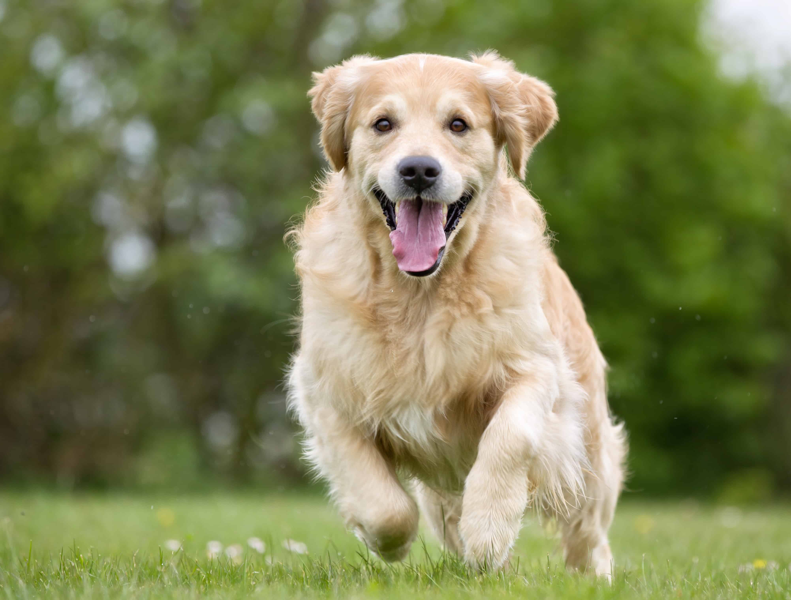

친근하고 지능적이며 활동적인 성격으로 유명한 인기 견종입니다.
다정하고 사람을 좋아하는 성격입니다. 뛰어난 지능과 학습 능력을 가지며, 헌신적이고 충성심이 강해 가정견 및 안내견으로 인기가 높습니다.
활동량이 많으므로 고품질의 고단백 사료를 급여해야 합니다. 과체중이 되기 쉬우므로 비만을 방지하기 위해 식단 조절이 중요합니다.
10년 ~ 12년
보통. 털 빠짐이 많은 편이라 꾸준한 빗질이 필요하며, 에너지가 넘치므로 충분한 운동량을 매일 확보해줘야 합니다.
넓은 공간과 충분한 활동이 필요하므로 마당 있는 집이나 산책을 자주 시킬 수 있는 환경이 적합합니다. 가족과 함께하는 것을 가장 좋아합니다.

다정하고 온순한 성격으로 유명합니다.